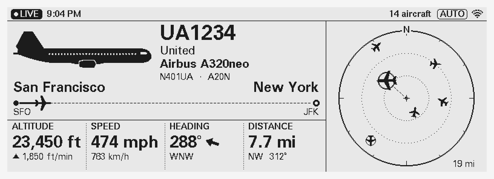

PlaneSpotter
The aircraft over your head, live.
Set up in 2 minutes
Plug in the USB-C cable.
Any phone charger works.
Scan the code on the screen
with your phone's camera.
Pick your Wi-Fi and type your town.
Press Save. That's it.
The button
Press
Switch between Aircraft, ISS and Auto
Hold 3 s
Settings: Wi-Fi, town, units, dark theme…
Hold 10 s
Erase everything and start again

The closest aircraft, its route and a radar of everything around you.
● LIVE
data is current
DELAYED
a few seconds behind
OFFLINE
screen: nothing shown is live; it says why
★
rare aircraft and emergencies take over the screen
ISS
10 min before it's visible: where to look